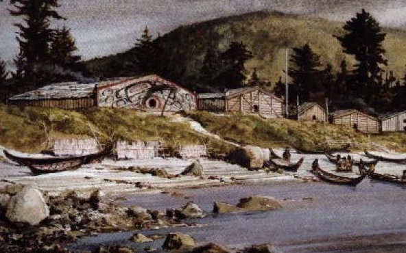
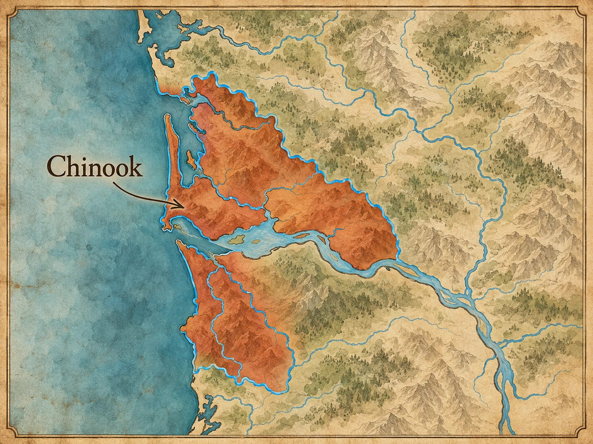
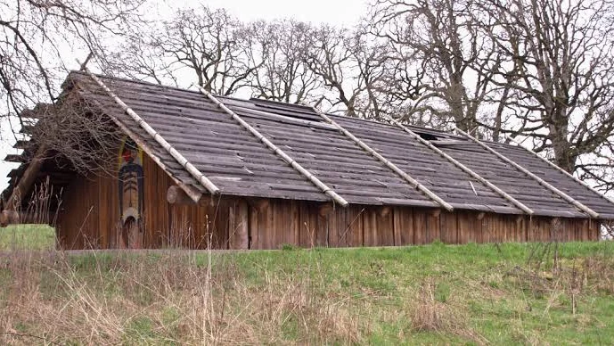
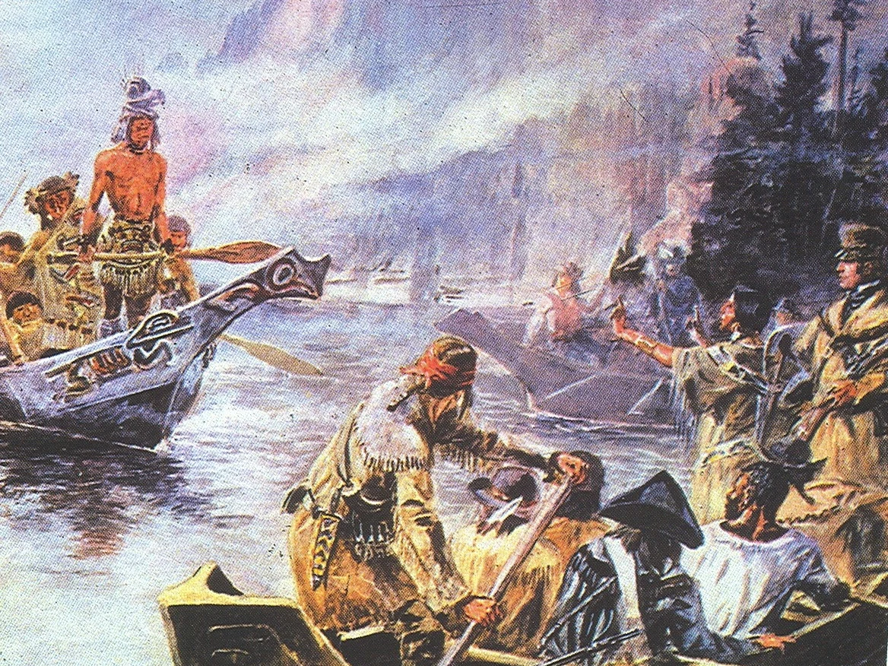
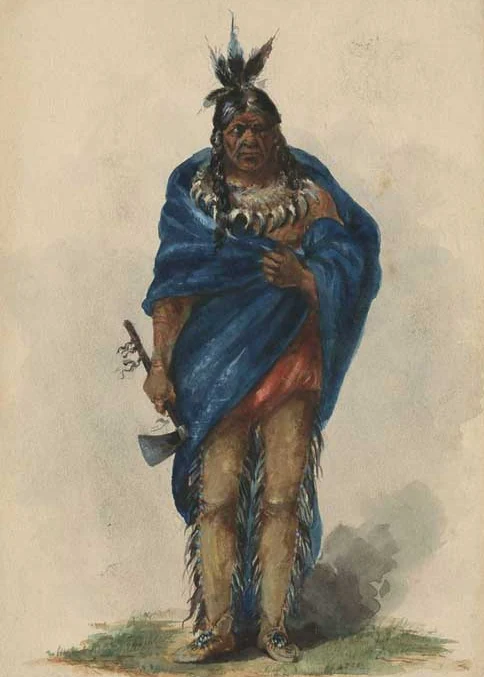
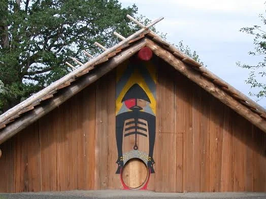
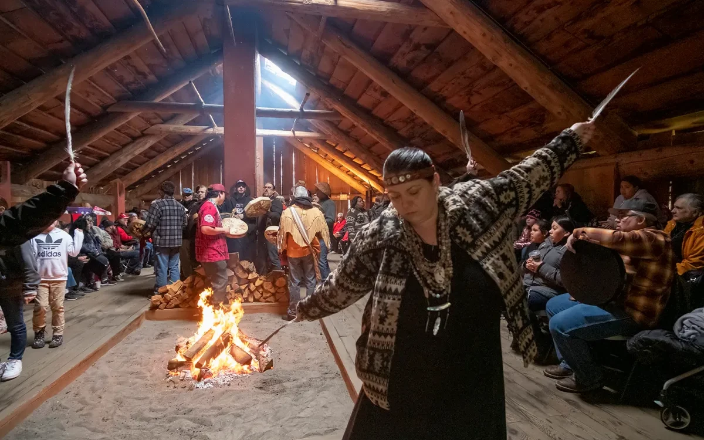

From the ocean
Foreign ships brought metal tools, blankets, cloth, beads, weapons, and other manufactured goods. In return, traders sought valuable sea-otter and beaver pelts and local provisions.
Chinookan-speaking communities lived along the lower Columbia River and nearby Pacific coast, where one of North America’s great rivers meets the ocean. Villages controlled important fishing and trading places. Expert canoeists moved people and goods through powerful currents, while plank houses anchored large communities along what functioned like a watery highway.


“Chinook” can mean different things. Chinookan refers broadly to related language-speaking peoples of the Columbia region, while the modern Chinook Indian Nation represents five western Chinookan tribes at the river’s mouth.
The lower Columbia carried salmon, sturgeon, people, news, and trade goods between coast and interior. River villages sat at strategic places where travelers stopped, exchanged goods, hired guides, or transferred around dangerous water.
At the river mouth, travelers had to deal with tides, ocean swells, shifting sandbars, storms, and the powerful current of the Columbia. Chinookan canoeists knew these waters intimately. Their skill made travel possible where outsiders often struggled.
That knowledge was economic power. Communities near the river mouth could connect ocean-going traders with people farther upriver, while villages along the river linked fisheries, portages, and trading places into one long network.


Large cedar plank houses sheltered extended families through wet winters. Chinook Indian Nation describes the plankhouse as more than a home: it could be a place of learning, ceremony, healing, hospitality, and family history.
Heavy posts and beams created a durable frame, while broad cedar planks formed walls and roofs. In some settings, planks could be removed and reused while the structural frame remained, allowing valuable building material to move with families between seasonal places.
Inside, a plankhouse organized much more than sleeping space. Fires, food preparation, storage, visiting, teaching, and ceremonies all took place within a structure connected to family and community identity.
By the time Lewis and Clark reached the lower Columbia in 1805, Chinookan communities already had generations of experience trading with neighboring nations and decades of direct contact with maritime traders. The expedition entered an existing commercial world—it did not create one.
At Middle Village near the river mouth, the National Park Service notes that nearly 90 European and New England trading ships crossed the Columbia River Bar during the ten years before Lewis and Clark arrived. Chinookan traders were already dealing in a world that stretched from the Pacific Ocean far upriver.

Foreign ships brought metal tools, blankets, cloth, beads, weapons, and other manufactured goods. In return, traders sought valuable sea-otter and beaver pelts and local provisions.
River routes carried dried foods, hides, roots, baskets, stone, and other goods between interior communities and the coast. Major villages became places where different trading networks overlapped.
Chinookan canoes connected the Columbia mouth with Willapa Bay, coastal settlements, and neighboring peoples. Skilled navigators could move people and cargo through water that newcomers found dangerous.
Outsiders needed food, local pilots, canoes, geographic knowledge, and trading partners. Lewis and Clark admired Chinookan canoes and hired local people to guide them through difficult water.
Not an empty frontier. They reached a populated river mouth with established villages, seasonal trade centers, experienced diplomats, expert canoe builders, and a commercial system that already included foreign ships. Chinookan people judged the newcomers as trading partners—and did not always accept the prices the expedition wanted to pay.
Chinuk Wawa became a widely used trade language across the Pacific Northwest. It grew from a multilingual world where people with different first languages needed to communicate.
Calling it “broken English” gets the history backward. It developed from Indigenous trade relationships and then changed as French- and English-speaking newcomers entered the network. Communities continued using Chinuk Wawa even after English became dominant.
A trade language also tells us something about the size of the network. People did not need a shared first language to exchange goods, news, directions, and information. Chinuk Wawa became one tool for communicating across a region filled with many distinct peoples and languages.
The lower Columbia was among the busiest Native trade regions on the coast, but epidemic disease in the late 1700s and 1800s caused catastrophic loss. American settlement then brought land seizures, resource competition, and pressure to move survivors to reservations.


Concomly was a prominent Chinook leader at the mouth of the Columbia during the early 1800s. He and his family dealt with maritime traders and the Lewis and Clark expedition from a position inside an already powerful regional trade network.
When Lewis and Clark reached the lower river, Concomly and other Chinookan leaders were not simply reacting to strangers. They had years of experience negotiating with captains, comparing trade goods, judging prices, and deciding whom to trust.
His story is useful because it flips the usual viewpoint: newcomers depended on Chinookan knowledge, food, canoes, pilots, and trade connections much more than school stories often admit.

Ridgefield National Wildlife Refuge includes a full-scale cedar plankhouse inspired by archaeological work at the large Chinookan village of Cathlapotle. Lewis and Clark recorded a major settlement there in 1806, but archaeological evidence shows that the village belonged to a much longer Chinookan history.
The reconstruction gives students something a floor plan cannot: scale. A house this large could hold extended families and serve as a center for work, hospitality, teaching, and community life.
The site also reinforces a theme running through this page. Lewis and Clark did not bring settlement to the Columbia. They passed through established towns whose residents already knew the river, its resources, and its trade routes.
Explore Cathlapotle with USFWS →The Chinook Indian Nation represents five western Chinookan tribes: Lower Chinook, Clatsop, Kathlamet, Wahkiakum, and Willapa. Tribal members continue canoe traditions, language work, ceremonies, public education, and stewardship in their lower Columbia homelands.
The Nation is not currently federally recognized by the United States. That legal status affects access to programs and the government-to-government relationship, but it does not determine whether Chinook people, families, history, or culture exist.
Recognition is therefore not just a vocabulary term. It affects how a Native nation interacts with the federal government, while community identity continues through families, governance, gatherings, language, place, and cultural work regardless of the federal label.


How does the story change when Lewis and Clark are treated as visitors entering an Indigenous trade network instead of as the people who “opened” the region?